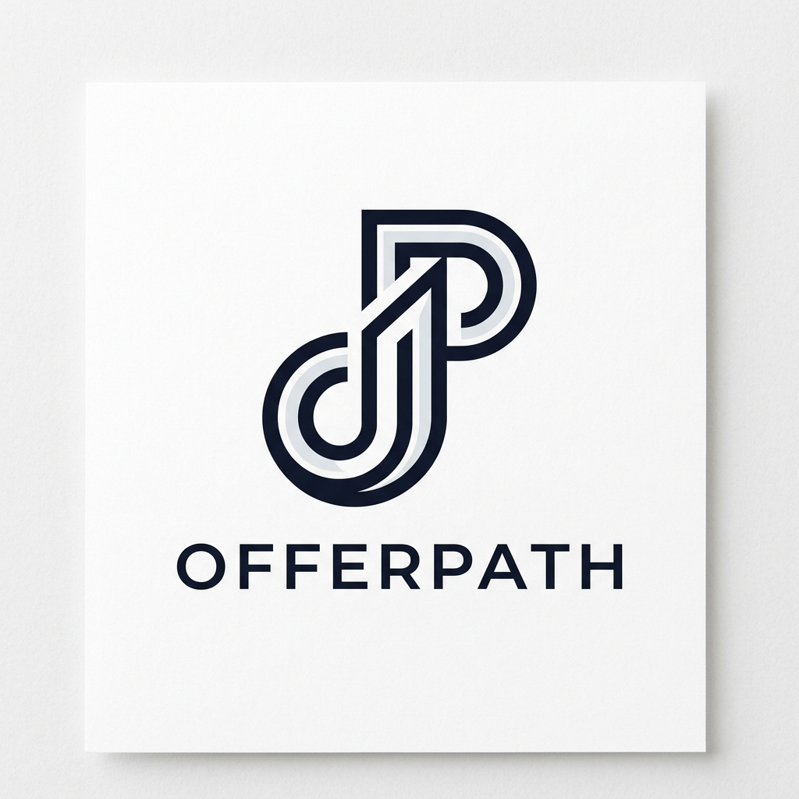

v1 was linework — fine for a wireframe, weak as a brand mark. v2 takes cues from the designmantic SaaS inspiration set: solid filled letterforms, a single warm accent, signal motifs that read at every size. All three use the existing palette (#0F172A ink, #FDFBF7 cream, #FF6A4E accent).

Solid filled OP monogram in deep navy, with a three-dot signal in coral emanating from the top of the P — directly inspired by the Plogal mark in the designmantic article.
The "OP" reads as the brand name; the signal dots add momentum and personality without clutter. At 16px the dots merge into a single coral dot, but the OP still reads cleanly. The construction is a true SaaS mark: one bold shape, one accent color, zero ambiguity.
A solid navy badge with three cream bars (decreasing length) and a single coral dot at the end of the top bar. The bars read as progressive milestones; the coral dot is the offer that lands at the top.
This is the most "app icon" of the three — works as a PWA icon, an App Store badge, a Chrome extension tile. The construction is a Notion/Airtable-grade badge mark and survives any background, any size, any context. The opacity-fading bars give the mark a built-in narrative without extra elements.
A navy filled disc with three small cream dots tracing a rising diagonal — and a single coral dot at the top-right as the destination. This is the v1 Trajectory concept rebuilt with solid fills, scale variation (small → small → small → LARGE), and the brand accent.
The disc reads as a scope, a search lens, or a scope view — fitting for a "career operating system." The four dots tell the story: three steps, one offer. At 16px the inner dots disappear, but the coral endpoint and the disc still read as a clear mark.
If you want one mark to own the brand across every surface — favicon, app icon, OG image, conference banner, business card — go with Stacks. It's the most "Notion/Airtable" of the three: a true badge mark, a built-in narrative, a single accent that pops on any background. The opacity-fading bars give it dimension without clutter.
Use A · OP Signal if the brand wants to lean into the "OP" monogram and a sense of momentum — best for a website hero, social avatar, and animated splash.
Use C · Beacon if the brand wants to feel closer to the existing aesthetic and a more abstract trajectory metaphor — best as a secondary mark for product surfaces (loading states, empty states, the in-app app icon).